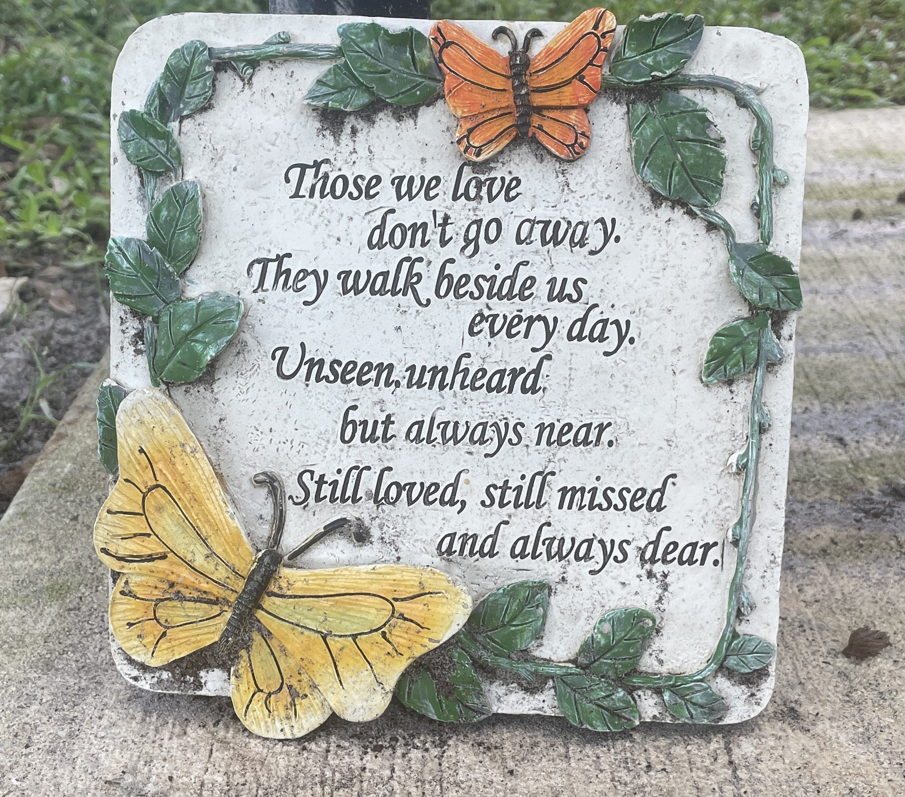

I have been trying to rationalize my love for butterflies as something more than vanity. They are so delightfully pretty, how they contrast with the open sky and dance with delicacy. But there must be more to it, right? Am I so shallow? I’m sure by looking at the Monarchs I could manufacture some great logic of my admiration for their generational Odyssey. Monarchs, after spending the winter in Central Mexico, embark on a trek of thousands of miles and multiple generations to northern North America where, by the end of summer, their progeny will make the trip back south. Over and over again for, as far as we can tell, a really long time. We don’t know precisely how the Monarchs know how or when to migrate. And we know that not all Monarchs are migratory. But generation after generation of butterflies complete a cycle of Life — with Life defined as something more than singular mortality. But, how often do I think of the Monarchs specifically? And how often after that do I interact with them? When I see Monarchs in my backyard my eyes will glaze slightly and my mouth will open in subtle awe. Truthfully, I enjoy butterflies mostly because they are striking. I enjoy their contrast and color. I enjoy all their varieties.
If there’s any depth to my love for butterflies maybe it’s this: they are a fragile beauty. I once visited the butterfly garden at Fairchild Botanical Gardens in Miami. It is an enclosed glass dome, adjacent to a cafe. To enter the garden, you must enter through an air lock, of the sort you think about only in space ships. The purpose is to ensure no butterflies escape containment. Were they prisoners? Before you enter the second door of the airlock, you are reminded by a sign plastered to the door to watch your step. Butterflies, the sign tells you, are everywhere and are prone to being squashed. You walk through the garden and see butterflies doing butterfly things. You will encounter many plaques telling you the names of these butterflies, and you will forget their names. But you will remember their colors against the glass of the greenhouse ceilings. And you will remember them perched on flowers, slowly opening then closing their wings with the cadence of breath. And you will remember looking down as you walk, dutifully looking out for grounded butterflies, and seeing those few unfortunate ones regardless of the warnings.
I enjoyed the tour around the garden, but I breathed a little easier outside the airlock. How miraculous are butterflies? Creatures of rebirth with wings lighter than air. So utterly reliant on outside factors, so vulnerable to change. How precious to experience their presence — growing up I was told the visiting monarch was my Grandmother come to check in on us. We have housed chrysalises in our garden, kept them in little tanks to watch as they change. I have seen the gorgeous gold filament sealing the caterpillar from the outside. I have seen beautiful wings unfurl, dry and take off. And I have seen weak wings droop and wither, never to leave the ground. How precious to see all of it. How easy to forget.
Recently I walked through an open butterfly garden near my house. It was part of a simple park that included a clay trail, memorial trees, tennis court, pavilion, as well as the flowers, bushes, and butterflies that comprised the butterfly garden. It was a quiet Sunday and there were far more butterflies, dragonflies, bees, squirrels, iguanas, and birds of all kinds than people on the grounds. I sat for a while on a bench with this plaque

and a distant view of the garden. I thought about my loved ones, gone. I thought about the simplicity of earnest belief and the working of its truth. I have no earthly idea if the butterfly on my shoulder is the grandmother I never got to know. But the very invocation of her name gives her corporality. Regardless of any other basis, that butterfly is my grandmother, is my aunt — will be my father, my mother, me. By seeing these fleeting, drifting, striking creatures I have been made to think of those lost to me, and they have been brought down to me again. As I sat on that bench and watched my people float on the wind among the flowers, I was relieved to know I’d be back there with them.